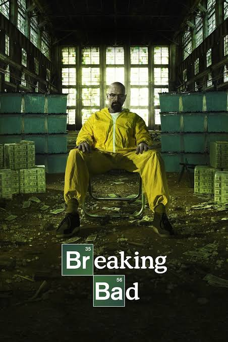
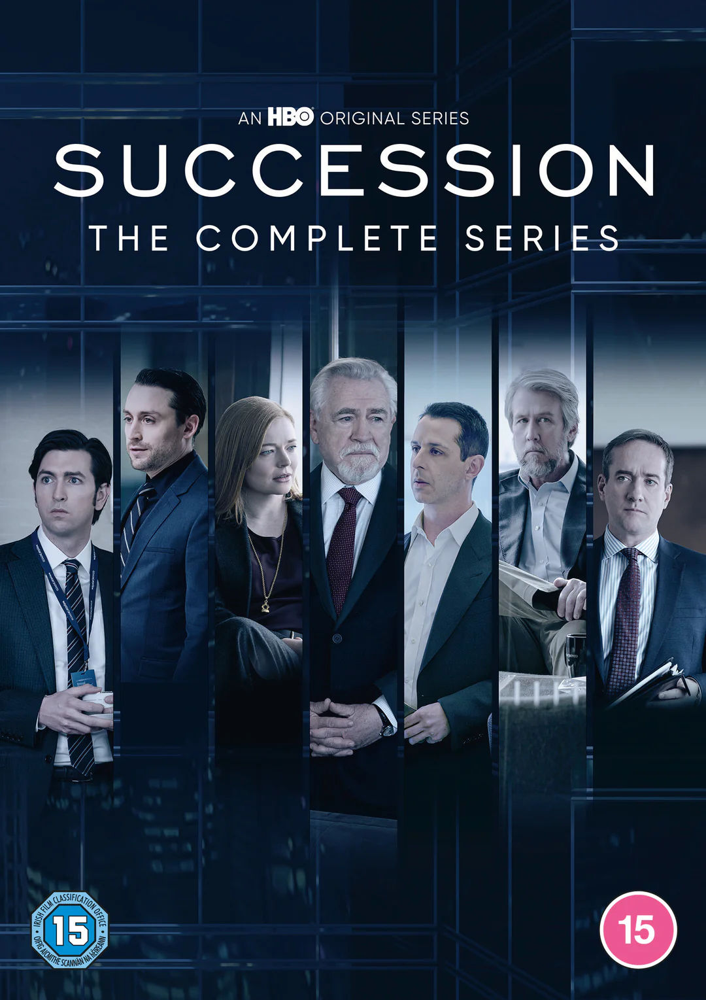
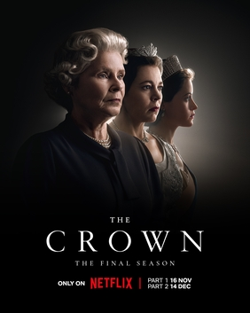
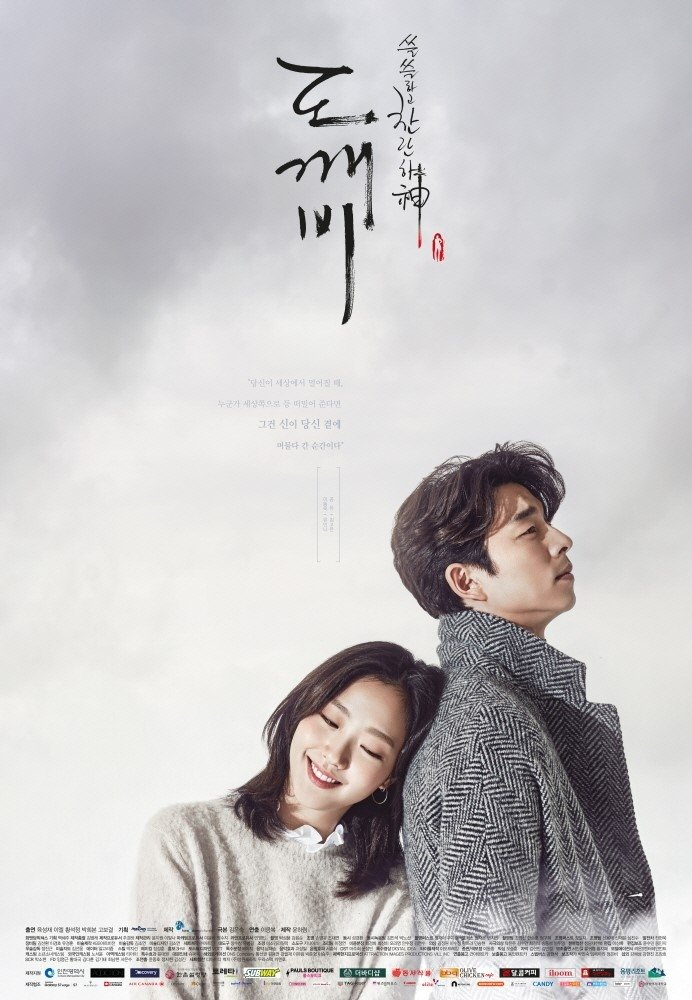
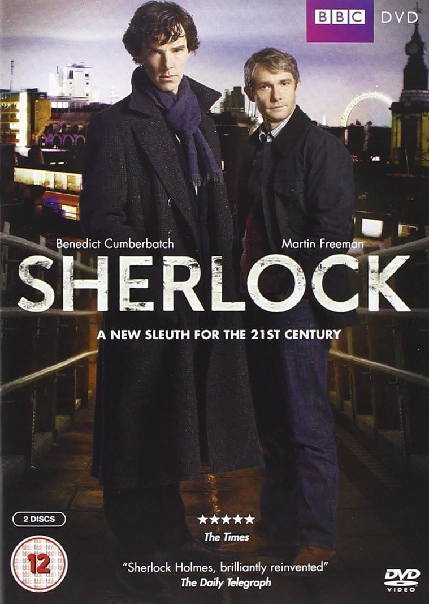

Best Drama Indurstry in the World.🌍
1. Hollywood (USA)
Strengths: Massive budgets, global reach, high production.
Known For:Prestige TV dramas like Breaking Bad, Game of Thrones, Succession, The Crown (co-produced with UK).
i.Breaking Bad

ii.Game of Thrones

iii.Succession

iv.The Crown

Influence: Sets global trends, attracts top talent.
2. South Korea (K-Drama)
Strengths: Emotionally rich stories, high production values, strong acting.
Known For: Crash Landing on You, Goblin, Itaewon Class, The Glory.
i.Crash Landing on You

ii.Goblin

iii.Itaewon Class

Global Reach: Hugely popular on Netflix and across Asia, Middle East, and Latin America.
Unique Appeal: Mix of melodrama, romance, and fantasy with cultural depth.
3.United Kingdom
Strengths: Sophisticated writing, literary roots, top-tier acting.
Known For: Downton Abbey, Peaky Blinders, Sherlock, The Crown.
i.Downton Abbey

ii.Peaky Blinders

iii.Sherlock

iv.The Crown
Style: Often slower-paced and more character-driven than Hollywood.
4.India (Hindi & Regional TV/OTT)
Strengths: Huge domestic market, emotional storytelling, social themes.
Known For:Scam 1992, Made in Heaven, Sacred Games.
Diversity:Produces content in multiple languages with regional flavors.